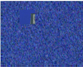

要测试新谷物和旧谷物是一样的，设置 输出 到 粒板 .
这将生成与样本区域平均值具有相同亮度级别的纹理片。还会显示具有原始纹理的样本区域。要区分这两个地区应该是不可能的。左边的图显示了一个很好的选择区域，在右边的图中给出了一个很好的谷物测试板。
| 良好的选择区域. |
...产生一个好的测试
板的谷物，免费的 神器。 |
下面，左边的图显示了一个糟糕的选择区域，因为它包含图像细节。右边的图显示了生成的测试板，它清楚地突出了问题。
|  | |
| 糟糕的选择区域. | ...产生一个糟糕的结果。 |
|
|